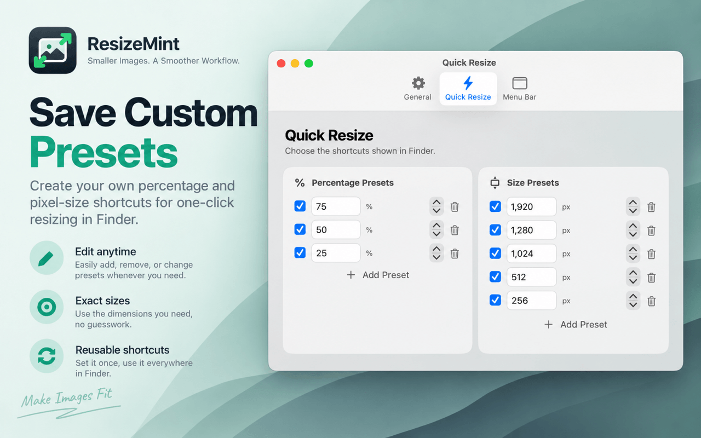

01
Save the sizes you use
Create percentage and pixel-size presets that appear directly in Finder. Add, remove, reorder, or change them whenever your workflow changes.
- Custom percentage presets
- Exact pixel-size presets
- Reusable across Finder
